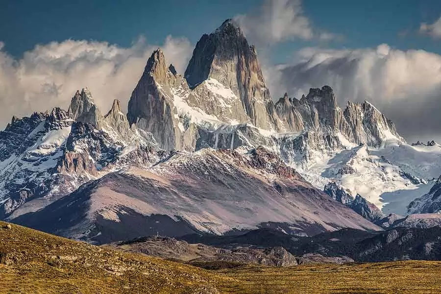

Explorando las Montañas: Una Aventura Inolvidable
Publicado el 15 de junio de 2025
El pasado fin de semana, tuve la oportunidad de explorar las majestuosas montañas de los Andes. La experiencia fue simplemente increíble, desde las vistas panorámicas hasta la fauna local que pude observar.
Comenzamos nuestra aventura a las 6 de la mañana, equipados con mochilas llenas de provisiones y cámaras para capturar cada momento. La caminata fue desafiante, pero cada paso valió la pena al llegar a la cima y contemplar el paisaje que se extendía ante nosotros.
Durante el recorrido, nos encontramos con varios animales, incluyendo cóndores y llamas, que añadieron un toque especial a nuestra expedición. Además, la camaradería entre los miembros del grupo hizo que la experiencia fuera aún más memorable.
El Viaje
El viaje comenzó con una caminata de 5 horas, atravesando senderos rocosos y cruzando pequeños riachuelos. La naturaleza en su estado más puro nos rodeaba, y cada vista era más impresionante que la anterior.
Al llegar a la cima, nos tomamos un momento para descansar y disfrutar de un picnic mientras admirábamos el paisaje. La sensación de logro y la conexión con la naturaleza fueron indescriptibles.
La Comida
Para el picnic, llevamos una variedad de alimentos energéticos, incluyendo frutas frescas, frutos secos y sándwiches. La comida supo mejor que nunca después de la ardua caminata, y compartirla con amigos en un entorno tan hermoso hizo que la experiencia fuera aún más especial.
Además, tuvimos la oportunidad de probar algunas delicias locales que compramos en un pequeño mercado antes de comenzar nuestra aventura. La combinación de sabores y la frescura de los ingredientes hicieron que cada bocado fuera memorable.